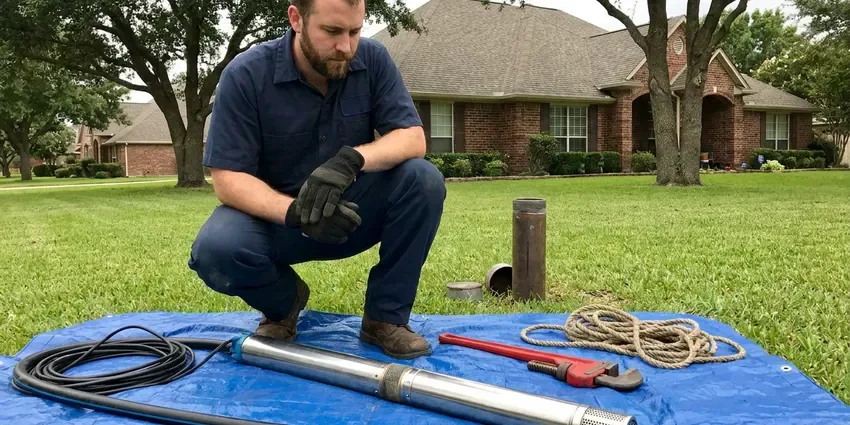
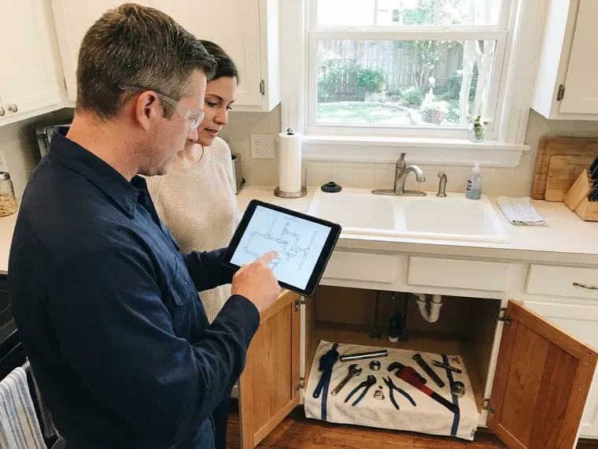

Water Line Replacement in Vestavia Hills, AL
For reliable water line replacement in Vestavia Hills, AL, look no further than BRV Plumbing. We provide professional service to address old, damaged, or corroded main water lines effectively.
- Fast Water Line Service
- Expert Plumbers
- Upfront Pricing
- Guaranteed Work

Reliable Water Line Replacement Solutions in Vestavia Hills, AL.
Don't let a damaged water line disrupt your daily life. Contact BRV Plumbing for prompt and professional service.
Professional Water Line Replacement in Vestavia Hills, AL
BRV Plumbing is the leading provider of water line replacement services throughout Vestavia Hills, AL. We understand the unique challenges that Alabama's soil conditions and varying temperatures can pose to underground piping, leading to corrosion or cracks.
Our expertise includes:
- Main water line excavation and replacement
- Trenchless water line replacement techniques
- Copper, PEX, and PVC water line installation

Additional Plumbing Replacement Services in Vestavia Hills, AL
When repairs are no longer enough, our replacement services in Vestavia Hills, AL deliver modern, efficient equipment installed right.




Well Pump Replacement in Vestavia Hills


Customers
Why Choose BRV Plumbing for Water Line Replacement in Vestavia Hills, AL?
We prioritize the integrity of your home's water system. Our meticulous approach to water line replacement prevents future issues and protects your investment.
- Local Expertise, We understand Alabama's specific plumbing codes and environmental factors affecting water lines.
- Quality Materials, We use only durable, industry-approved piping materials like copper, PEX, and high-grade PVC for longevity.
- Advanced Techniques, Our team is skilled in both traditional trenching and less invasive trenchless replacement methods, minimizing disruption.
Citywide Coverage
BRV Plumbing proudly serves every neighborhood and community across Vestavia Hills. Whether you're in the historic district or a newer subdivision, our expert plumbers are ready to address your water line replacement needs promptly and professionally.
Experienced Team
Our team of licensed plumbers brings years of specialized experience in water line replacement in Alabama. They are meticulously trained in identifying the root cause of water line failures, whether it's due to Alabama's expansive clay soils or corrosive water conditions.
Safety-First Approach
We take every precaution to protect your property and our crew during water line replacement. From proper utility locates to meticulous backfilling, BRV Plumbing guarantees a safe and compliant process, giving you peace of mind.
Trusted Certified Vestavia Hills Plumbing Services Professionals
At BRV Plumbing, we take pride in providing certified plumbing services throughout Vestavia Hills, AL. Backed by leading industry credentials, our experienced plumbers combine technical skill with genuine customer care. Whether it is repair, installation, or maintenance, we follow strict safety and quality standards to deliver long-lasting results you can trust.
Call Us Now PHCC Plumbing Contractor Recognition
PHCC Plumbing Contractor Recognition Better Business Bureau (BBB) Accreditation
Better Business Bureau (BBB) Accreditation Angi Certified Pro
Angi Certified Pro ISO 9001 Quality Management Certification
ISO 9001 Quality Management CertificationDependable Water Line Replacement Services in Vestavia Hills, AL
Main Water Line Repair vs. Replacement in Vestavia Hills
Deciding between repair and full replacement depends on the extent of the damage. If your main water line in Vestavia Hills has multiple leaks, severe corrosion, or is nearing the end of its lifespan, replacement is often the more cost-effective long-term solution. Our technicians will perform a thorough inspection, including pressure testing and possibly video inspection, to recommend the best course of action. We consider factors like the age of your home, the material of the existing pipe, and the nature of the damage before advising.

Trenchless Water Line Replacement in Vestavia Hills, AL
For homeowners in Vestavia Hills, AL looking to minimize disruption to their landscape, trenchless water line replacement is an excellent option. This method involves creating small access points and using specialized equipment to pull a new pipe through the old one, or burst the old pipe while installing a new one. It's ideal for situations where the main line runs under driveways, mature trees, or other hardscapes. We use high-density polyethylene (HDPE) pipes for their durability and flexibility in trenchless applications.
Traditional Water Line Excavation in Vestavia Hills
Sometimes, traditional open-trench excavation is the most appropriate method for water line replacement in Vestavia Hills, especially for severe damage, complex pipe layouts, or when the existing pipe material is incompatible with trenchless techniques. Our team carefully excavates the area, removes the old pipe, and installs a new, high-quality main water line, typically using copper or PEX. We ensure proper grading and compaction of the soil during backfilling to prevent future issues.
Copper Water Line Installation in Vestavia Hills, AL
Copper has been a trusted material for main water lines for decades due to its durability and resistance to corrosion. In Vestavia Hills, AL, copper water lines offer excellent longevity and are less susceptible to issues from soil shifts or chemical interactions. While typically a higher upfront investment, copper provides a reliable and long-lasting solution, often outperforming other materials in certain applications. We use Type K or Type L copper for underground main lines, known for their thickness and strength.
PEX Water Line Replacement in Vestavia Hills
PEX (cross-linked polyethylene) is a popular and cost-effective choice for water line replacement in Vestavia Hills. It's flexible, resistant to freezing, and less prone to scaling and corrosion than some traditional materials. Its flexibility allows for easier installation, often requiring fewer connections, which reduces the potential for leaks. PEX is also a good option for homes with aggressive soil conditions common in parts of Alabama, offering a reliable alternative to metal pipes.
Emergency Water Line Replacement in Vestavia Hills, AL
A burst main water line is a plumbing emergency that requires immediate attention. BRV Plumbing offers emergency water line replacement services across Vestavia Hills, AL to quickly address catastrophic failures. Our rapid response team will assess the damage, shut off your water supply to prevent further flooding, and work diligently to replace the compromised section or the entire line. We understand the urgency and prioritize restoring your water service safely and efficiently.
Commercial Water Line Replacement in Vestavia Hills
Beyond residential services, BRV Plumbing also provides robust commercial water line replacement in Vestavia Hills. Businesses, schools, and industrial facilities rely on strong, uninterrupted water service. We handle larger diameter pipes and more complex installations, ensuring minimal downtime for your operations. Our commercial services are tailored to meet the specific demands and codes for various business types, utilizing durable materials designed for heavy usage.

Water Line Materials and Brands in Vestavia Hills, AL
We work with a range of high-quality materials and trusted brands for water line replacement across Vestavia Hills, AL. This includes durable copper tubing from manufacturers like Mueller Industries, flexible PEX piping from leading brands such as Uponor and Viega, and high-grade PVC for specific applications where appropriate. Our selection ensures your new water line is built to last, providing reliable water flow and meeting all local standards for potable water delivery.
Water Line Replacement Near Me in Vestavia Hills, AL
When you search for 'water line replacement near me' in Vestavia Hills, AL, BRV Plumbing is your trusted local expert. We have deep roots in the community and a strong understanding of the local infrastructure and common plumbing issues affecting homes in this area. Our prompt service means we can quickly dispatch a team to your location, often providing same-day assessments for urgent situations.
Our commitment to Vestavia Hills extends to providing accessible and reliable plumbing solutions. We pride ourselves on being the go-to plumbing company for residents facing main water line problems, delivering professional service that's always just a phone call away. Trust BRV Plumbing to be your local partner for all water line replacement needs.
BRV Plumbing at a Glance
- Fully licensed plumbing team covering Vestavia Hills, AL
- 24/7 emergency service with same-day scheduling
- Clear written estimates, no hidden fees
- 4.8-star rated by 549+ Alabama customers
Vestavia Hills Map
Vestavia Hills Information
- Population
- 38,020
- Area codes
- Local
- Service area
- Vestavia Hills and communities within 40 miles
- Nearby
- Birmingham, Hoover, Alabaster, Tuscaloosa
Given Alabama's expansive clay soils and the potential for ground shifts, robust and properly installed water lines are crucial for homes in Vestavia Hills, AL to prevent leaks and costly damage.
Expert Services
Trust our professionals for reliable BRV Plumbing solutions in Vestavia Hills, AL.
Our Specialized Plumbing Services in Vestavia Hills, AL
At BRV Plumbing, we provide a complete range of plumbing services across Vestavia Hills, AL. From leak detection to full system installations, our team ensures fast, precise, and affordable service for both residential and commercial properties. Explore our core services below:


How Our Water Line Replacement Process Works in Vestavia Hills, AL
From the initial inspection to the final backfill, BRV Plumbing follows a systematic approach to ensure a high-quality and lasting water line replacement.
Request a Quote
Contact BRV Plumbing at (256) 391-9413 to schedule an inspection. Our team will assess your current water line issues and provide a detailed, transparent estimate for replacement.
Site Assessment
We conduct a thorough evaluation of your property, pinpointing the exact location of the damaged line and determining the best replacement method, considering your landscape and budget.
Permit & Preparation
Once a plan is approved, we handle all necessary permits with Vestavia Hills authorities. We also mark utility lines and prepare the site for safe and efficient excavation or trenchless work.
Frequently Asked Questions About Water Line Replacement in Vestavia Hills
The cost of water line replacement in Vestavia Hills, AL can vary significantly, typically ranging from $2,500 to $8,000 for residential properties. Factors influencing the price include the length of the line, the chosen material (copper, PEX), the method of replacement (trenchless vs. excavation), and the complexity of the excavation. We provide a detailed, upfront estimate after a thorough inspection.
Common signs include a sudden drop in water pressure, discolored or rusty water coming from your taps, unusually wet spots in your yard that aren't explained by rain, and a significant increase in your water bill. If you notice any of these, especially combined with the age of your home, it's wise to have your water line inspected.
Main water line replacement is a complex job that requires specialized equipment, knowledge of plumbing codes, and excavation experience. It's highly recommended to hire a licensed and insured professional plumbing company like BRV Plumbing. Improper installation can lead to costly leaks, code violations, and potential health risks from contaminated water.
Yes, main water line replacement almost always requires a plumbing permit from the Vestavia Hills or county building department. This ensures the work is performed to code and inspected for safety and proper function. BRV Plumbing handles all necessary permit applications and inspections as part of our service.
BRV Plumbing stands behind our work with comprehensive warranties on both parts and labor for water line replacements. The exact warranty period can vary based on the materials used and the scope of the project, but we will always provide you with full details in writing before any work begins, ensuring your peace of mind.
Most residential main water line replacements in Vestavia Hills can be completed within one to three days, depending on the method used (trenchless is often faster) and the specific conditions of your property. Complex jobs or those requiring extensive excavation may take longer, but we always strive for efficient service to restore your water quickly.
Alabama's climate, with its occasional freezes and expansive clay soils, can put stress on underground water lines. Freezing temperatures can cause pipes to burst, while soil movement due to wet and dry cycles can lead to shifting and cracking. These environmental factors make durable water line materials and expert installation crucial for homes in Vestavia Hills, AL.
We primarily use high-quality copper and PEX (cross-linked polyethylene) for main water line replacements due to their durability and long lifespan. Specific material choice depends on factors like soil conditions in Vestavia Hills, water chemistry, and your budget. We work with trusted brands like Mueller Industries for copper and Uponor or Viega for PEX.
What People Are Saying About Our Plumbing Experts?

James P.
Our commercial plumbing system had a leak under the sink, and BRV Plumbing handled it professionally. The plumbers arrived quickly and restored everything without disruption to our customers.
Commercial Plumbing · Hoover, AL
Sofia M.
Two new toilets installed in one visit, no mess left behind, and the tech even adjusted a faucet he noticed was dripping. Fair pricing and really friendly.
Toilet Installation · Hoover, AL
Patricia H.
We had a slab leak that two other companies could not find. BRV Plumbing located it in under an hour, explained our options, and the price matched the quote to the dollar.
Slab Leak Repair · Anniston, AL
Mark T.
When our office needed drain cleaning, BRV Plumbing provided quick, reliable service. The plumber arrived on time and made sure every drain flowed perfectly before leaving. Very satisfied.
Drain Cleaning · Hoover, AL
Emily R.
I called BRV Plumbing for plumbing repair, and the technician was fast, polite, and thorough. They explained the problem clearly and fixed it the same day. I will definitely hire them again. Highly recommended!
Plumbing Repair · Hoover, ALRobert G.
The trenchless sewer replacement saved our front yard. They walked us through the camera inspection footage first so we knew exactly what we were paying for.
Sewer Line Replacement · Vestavia Hills, AL